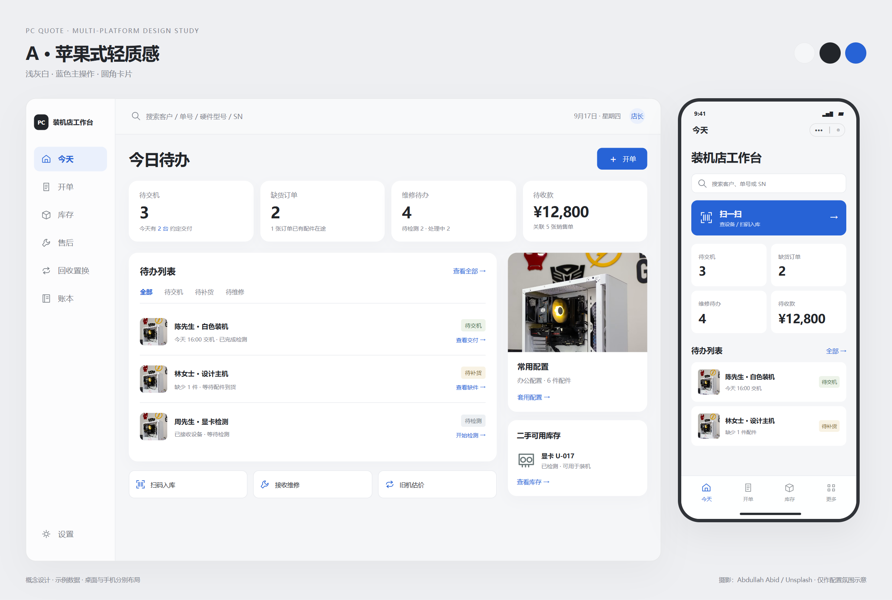

PC QUOTE / DESIGN STUDY / 2026.09.17
装机店工作台 · 多端视觉提案
同一组业务内容，比较三种视觉表达。每版包含桌面与手机布局。
浅灰白、清晰层级与精细硬件图；玻璃质感仅用于局部导航。打开原图 ↗

效果图由独立 HTML 页面渲染，使用示例数据；不代表功能已经实现。支持使用左右方向键切换方案。查看设计说明 · 查看完整提示词
同一组业务内容，比较三种视觉表达。每版包含桌面与手机布局。

效果图由独立 HTML 页面渲染，使用示例数据；不代表功能已经实现。支持使用左右方向键切换方案。查看设计说明 · 查看完整提示词